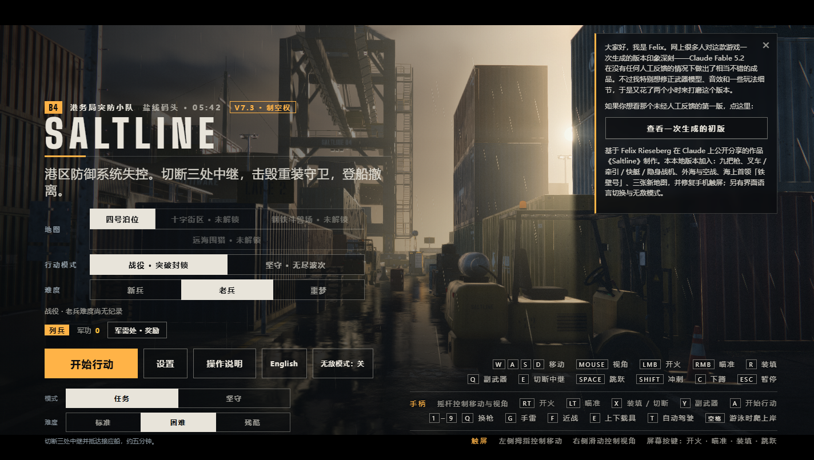
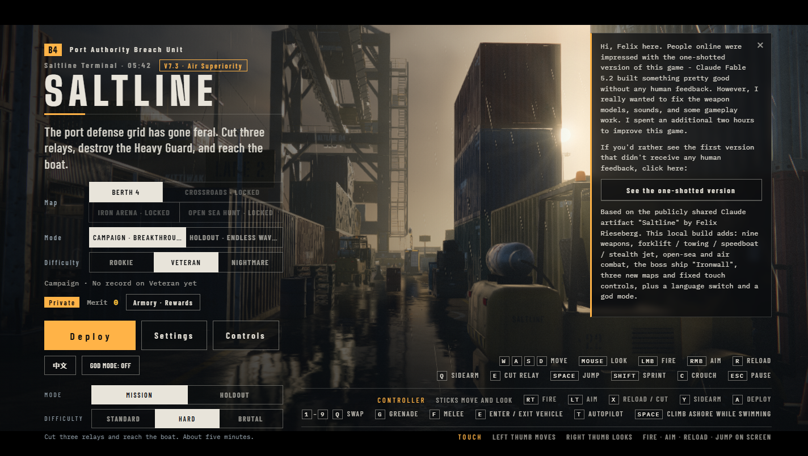
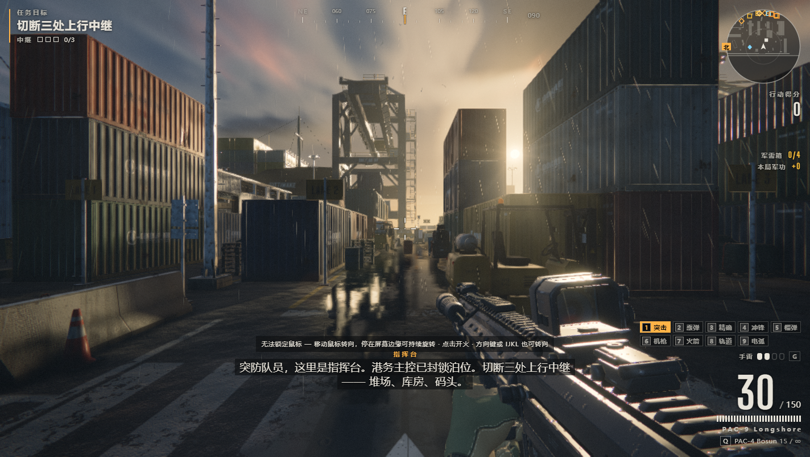

⚠️ 未完整测试，可能存在未知 bug；中/英文均为机器翻译，可能不准确。
已知问题：暂无（原「ESC / 返回主菜单无法退出」已修复，见下方更新说明）。
✅ 2026-11 更新：修复了移动端虚拟摇杆无法移动的问题（真机 iOS 上引擎内部 touch→move 换算失效、向量恒为 0，改用 stick-fix.js 包装 input.update 直接写入摇杆向量绕开该链路）；修复了暂停后点击「返回主菜单」无效的问题 —— 现在会直接结束当前对局并回到主菜单（ESC 仍为暂停 / 继续）。
《Saltline》是一款用纯 HTML / Three.js 实现的 3D 第一人称港务突防小游戏。本仓库在原版基础上：
原版是 Felix Rieseberg（@felixrieseberg）在 Claude 上发布的公开作品，本仓库以其为基底。功能扩展部分参考了 X_mason13（@X_mason13）的二开版本，但未沿用其宣传改名（如「Aggie速记英语 3A大作」），标题仍保持 Saltline。
游戏：https://MKA930.github.io/saltline-extended/
| 主菜单（中文） | 主菜单（英文） | 游戏内（中文） |
|---|---|---|
 |
 |
 |
双击 index.html 即可离线运行（无需服务器、无需联网）。
index.html 由 build.py 从上游基底叠加本地化与修复脚本生成；本仓库为精简交付，直接提供已内联全部修复的成品 index.html，并保留修复源码与构建脚本：
python build.py # 输出 index.html（需在含上游基底的环境中运行）
node --check i18n.source.js # 语法校验build.py：以原版英文基底为 BASE，从参考版抽取第 2 个 <style> 与第 2 个 <script>（V2~V9 扩展增量），叠加语言切换 / 无敌模式 / 署名说明，并做品牌清理与扩展兼容性垫片；随后在 </head> 前注入以下移动端修复：
mobile-fix.css / mobile-fix.js：禁默认手势 + 运行时 preventDefault() 兜底 + ?diag=1 真机诊断浮层（左摇杆热区由 45% 放宽到 50%）；stick-fix.js：包装 input.update，引擎算完后用摇杆向量覆盖 input.move，绕开 iOS 上失效的引擎内部 touch→move 链路；menu-fix.js：暂停 / 阵亡 / 结算面板的「返回主菜单」改为走引擎状态机，直接结束对局回到主菜单。i18n.source.js：菜单 DOM 本地化层（中英双向字典 + 运行时 MutationObserver 监听），会被 build.py 内联进 index.html。上游基底（原版英文 Saltline/index.en.html、参考二开版 _ref/aggie.html、本地化 Saltline/i18n.source.js）未随精简仓库分发，故 build.py 仅作文档化的注入配方；线上运行依赖已构建好的成品 index.html。
原版把武器伤害 / 射速定义为只读 getter，「战场强化」中的伤害与射速升级无法写回原版引擎（弹匣容量、武器名可以）。这是原版引擎本身的限制，不影响九把枪切换、载具、空战与首领战。
MIT License。Copyright (c) 2026 Winston (MKA930)。原作品版权归 Felix Rieseberg 所有；本仓库包含对其作品的修改与扩展。详见 LICENSE。
⚠️ Not fully tested — unknown bugs may exist; both the Chinese and English UI texts are machine-translated and may be inaccurate.
Known issue: None (the former "Back to menu" issue has been fixed, see the update note below).
✅ Nov 2026 update: Fixed the mobile virtual joystick not moving the player (on real iOS the engine's internal touch→move conversion silently produced a zero vector; stick-fix.js now wraps input.update and writes the joystick vector directly, bypassing that broken path); fixed "Back to menu" not working while paused — it now ends the current run and returns to the main menu (ESC still pauses / resumes).
Saltline is a 3D first-person port-breaching game built as a single HTML file with Three.js. This repository extends the original:
The base is the publicly shared Claude artifact "Saltline" by Felix Rieseberg (@felixrieseberg). The feature extensions reference the second-dev (fork) version by X_mason13 (@X_mason13), but this repo does not adopt its rebranding (e.g. "Aggie速记英语 3A大作") — the title stays Saltline.
Game: https://MKA930.github.io/saltline-extended/
| Menu (Chinese) | Menu (English) | In-game (Chinese) |
|---|---|---|
Double-click index.html — it runs fully offline (no server, no network).
index.html is produced by build.py from the upstream base plus the localization and fix scripts. This repo ships a trimmed deliverable — it ships the pre-built index.html with all fixes already inlined, along with the fix sources and the build script:
python build.py # emits index.html (run in an environment that has the upstream base)
node --check i18n.source.js # syntax checkbuild.py: uses the original English base, extracts the 2nd <style> and 2nd <script> (the V2–V9 extension increment) from the reference build, layers on language switch / god mode / attribution, and applies debranding plus an extension-compatibility shim; it then injects the following mobile fixes before </head>:
mobile-fix.css / mobile-fix.js: disabled default gestures + a runtime preventDefault() fallback + the ?diag=1 on-device diagnostic overlay (left joystick hot-zone widened from 45% to 50%);stick-fix.js: wraps input.update and overwrites input.move with the joystick vector after the engine finishes, bypassing the broken internal touch→move path on iOS;menu-fix.js: the "Back to menu" button on the pause / death / results panels is rerouted through the engine state machine, ending the run and returning to the main menu.i18n.source.js: the menu DOM localization layer (bidirectional CN/EN dictionary + runtime MutationObserver); build.py inlines it into index.html.The upstream base (original English Saltline/index.en.html, reference second-dev _ref/aggie.html, localization Saltline/i18n.source.js) is not shipped in this trimmed repo, so build.py serves mainly as a documented injection recipe; the live build depends on the pre-built index.html.
The original defines weapon damage / fire-rate as read-only getters, so the "field upgrades" for damage and fire-rate cannot be written back to the original engine (magazine size and weapon name can). This is a limitation of the original engine and does not affect weapon switching, vehicles, air combat, or the boss fight.
MIT License. Copyright (c) 2026 Winston (MKA930). The original work is © Felix Rieseberg; this repository contains modifications and extensions of it. See LICENSE.